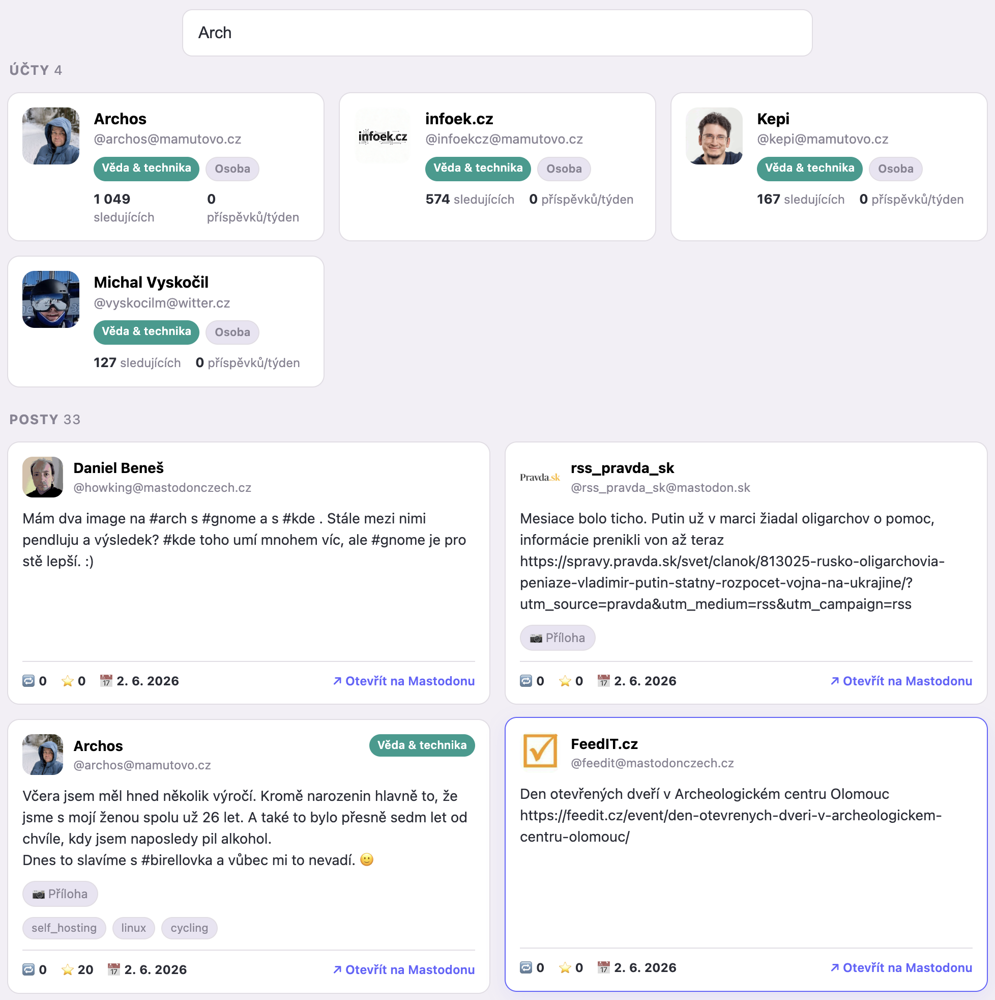
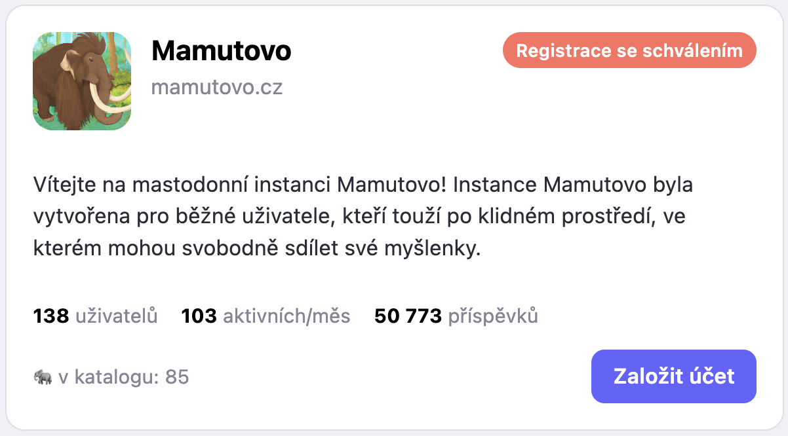
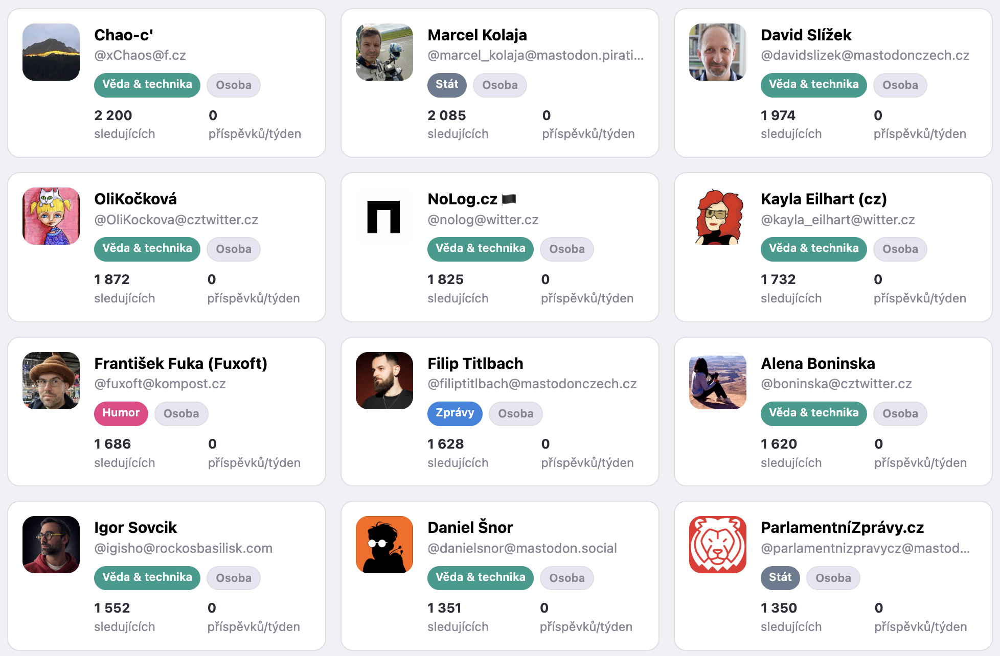
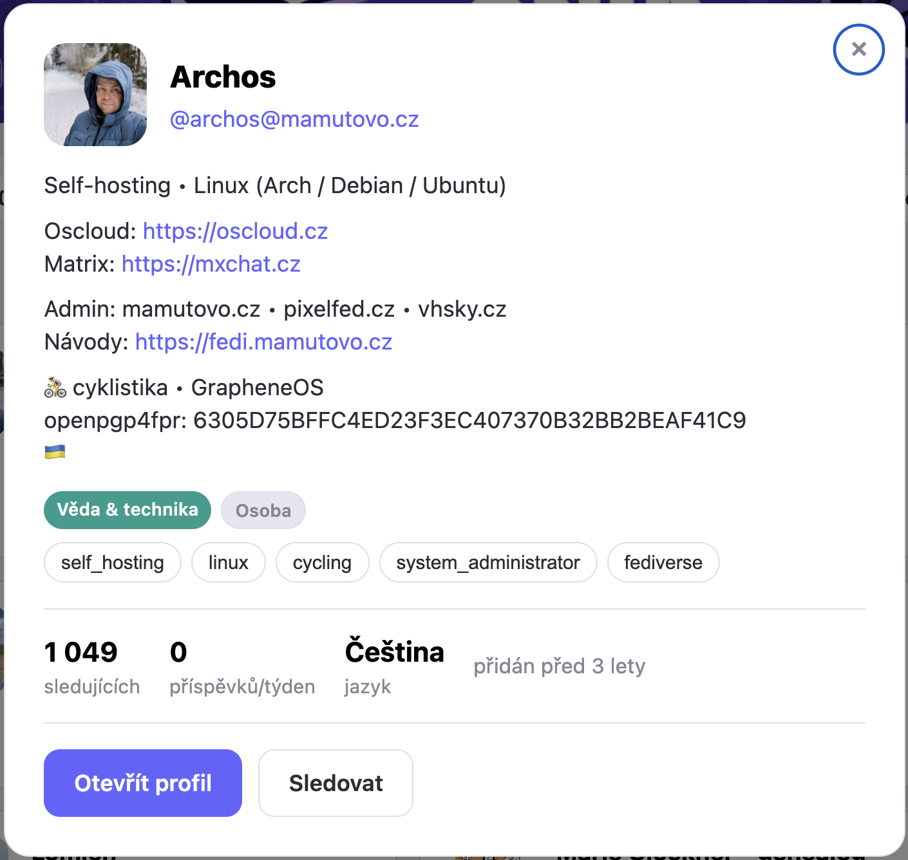
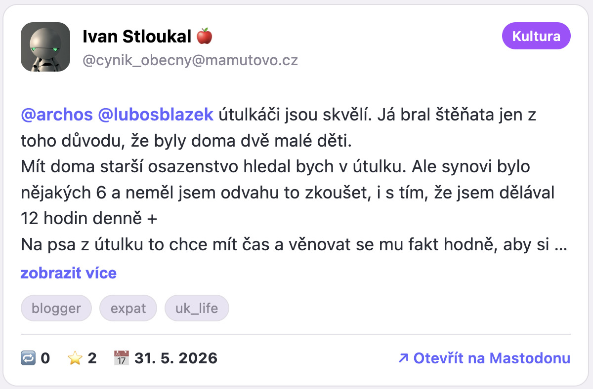

Sloník je katalog českých a slovenských uživatelů sítě
Mastodon.
Pomáhá najít zajímavé lidi, média i instituce z našeho prostoru — napříč
všemi servery (instancemi), bez ohledu na to, kde mají účet.
Sloník je inspirovaný katalogem
katalog.zpravobot.news
ze Zprávobot.news, na který uživatelé pozitivně reagovali a stal se proto
základem Sloníka. Protože ale pracuje s daty z jiných Mastodon instancí,
všechny mechanismy pro získávání dat využívají veřejná rozhraní a data.
Sloník nabízí pět pohledů:
Vyhledávání — fulltext napříč účty i příspěvky; nezáleží
na diakritice a není potřeba přihlášení.
Instance — adresář českých a slovenských serverů (kde si
založit účet) i s jejich velikostí, aktivitou a stavem registrací.
Účty — prohledávatelný katalog profilů roztříděný podle
oblastí, typu a jazyka.
Odkazy — kurátorovaný rozcestník článků a návodů o Mastodonu.
Odkud data pocházejí
Účty se objevují přes veřejné Mastodon API (sociální graf + lokální
adresáře českých a slovenských instancí). Zařazení do oblasti a tagy
navrhuje jazykový model na základě profilu a posledních příspěvků.
Metriky (sledující, aktivita) se pravidelně obnovují.
Vyhledávání a Posty stojí na vlastním indexu, který pravidelně sbíráme
z veřejných (lokálních) timeline českých a slovenských instancí a z účtů
v katalogu. Na rozdíl od katalogu sem patří i automatické účty
(boti) — třeba zpravodajské kanály z instance zpravobot.news.
Katalog je zaměřený výhradně na češtinu a slovenštinu —
účty bez vazby na náš prostor se do něj nezařazují.
About Sloník
Sloník is a catalog of Czech and Slovak users of
Mastodon.
It helps you discover interesting people, media and institutions from our
region — across all servers (instances), no matter where their account lives.
Sloník is inspired by
katalog.zpravobot.news
from Zprávobot.news, which users responded to positively and which therefore
became the basis of Sloník. Because it works with data from other Mastodon
instances, all data-gathering uses public interfaces and public data.
Sloník has five views:
Search — full text across accounts and posts;
diacritics-insensitive, no login needed.
Instances — a directory of Czech and Slovak servers
(where to create an account) with their size, activity and registration status.
Accounts — a searchable catalog of profiles sorted by
topic, type and language.
Posts — weekly charts of the best-performing posts.
Links — a curated set of articles and guides about Mastodon.
Where the data comes from
Accounts are discovered via the public Mastodon API (social graph + local
directories of Czech and Slovak instances). Topic and tags are suggested by
a language model based on the profile and recent posts. Metrics (followers,
activity) are refreshed regularly.
Search and Posts are built on our own index, regularly collected from the
public (local) timelines of Czech and Slovak instances and from catalog
accounts. Unlike the catalog, this also includes automated accounts
(bots) — e.g. news feeds from the zpravobot.news instance.
The catalog focuses exclusively on Czech and Slovak —
accounts with no tie to our region are not included.
Jak pracovat s Vyhledáváním
Do pole napiš, co hledáš — Sloník naráz prohledá účty i příspěvky
českého a slovenského Mastodonu. Nezáleží na velikosti písmen ani diakritice
(napíšeš „bouzkova", najde „Bouzková") a není potřeba se přihlašovat.
Co prohledává
Hledá ve vlastním indexu příspěvků za posledních zhruba 30 dní (sbíraném
z lokálních timeline CZ/SK instancí a z katalogových účtů) a v seznamu účtů.
Výsledky jsou ve dvou sekcích — Účty a Posty —
se stejnými kartami jako v tabech Účty a Posty.
Při jednom nebo dvou písmenech funguje jako napovídač účtů —
vypíše účty, jejichž jméno (nebo handle) tím začíná (např. „da" → David, Dan, Danuše).
Od tří písmen běží plné hledání v účtech i příspěvcích.
Když napíšeš víc slov, musí se objevit všechna (logické „a zároveň").
Přesnou frázi uzavři do uvozovek — např. „jarní úklid"
najde jen příspěvky, kde jsou ta slova hned za sebou. Slovo vyloučíš mínusem —
praha -kolo najde příspěvky s „praha" bez „kolo".

Filtry a žebříčky
Oblast (dle účtu) a Hashtagy — zúží nalezené příspěvky (oblast je téma autora).
Řadit — podle shody, nejnovější, nebo dle boostů/oblíbených.
Top 10 / 50 a Skokani týdne (Poměrem / Dosahem) — žebříčky nalezených příspěvků.
Ve výsledcích jsou i automatické účty (boti) — třeba
zpravodajské kanály — které v katalogu Účtů nenajdeš.
Working with Search
Type what you're looking for — Sloník searches accounts and posts
across the Czech and Slovak Mastodon at once. It's case- and diacritics-insensitive
(type "bouzkova", it finds "Bouzková") and no login is needed.
What it searches
It searches our own index of posts from roughly the last 30 days (collected
from the local timelines of CZ/SK instances and from catalog accounts) and the
list of accounts. Results come in two sections — Accounts and
Posts — using the same cards as the Accounts and Posts tabs.
With one or two letters it acts as an account autocomplete —
it lists accounts whose name (or handle) starts with them (e.g. "da" → David, Dan).
From three letters the full search across accounts and posts runs.
With multiple words, all of them must appear (logical AND). Wrap an
exact phrase in quotes — e.g. "spring cleanup" matches
only posts where those words appear right next to each other. Exclude a word
with a minus — praha -kolo finds posts with "praha" but without "kolo".
Filters and charts
Topic (by account) and Hashtags — narrow the found posts (topic is the author's).
Sort — by relevance, newest, or by boosts/favourites.
Top 10 / 50 and Weekly risers (by ratio / by reach) — charts of the found posts.
Results also include automated accounts (bots) — e.g. news
feeds — which you won't find in the Accounts catalog.
Jak pracovat s Instancemi
Pohled Instance je adresář serverů, na kterých běží český
a slovenský Mastodon — užitečný, když si chceš založit účet
a vybrat, kam patříš.
Co karta ukazuje
Logo a název, krátký popis, počet uživatelů, měsíční aktivitu, počet
příspěvků, stav registrací a kolik je na ní účtů z našeho katalogu. Tlačítko
Založit účet vede přímo na registraci dané instance.

Sekce
České a slovenské instance — hlavní komunitní servery.
Malé / osobní instance — drobné nebo rodinné servery.
Další instance s českými/slovenskými účty — velké
zahraniční servery, kde má účet hodně Čechů a Slováků.
Filtry a žebříčky
Vlevo Vyhledat, Řadit a Oblast
(zaměření instance). Nad seznamem jsou žebříčky Top 10 / 50 a
Aktivita instance — Poměrem (podíl aktivních uživatelů)
a Objemem (celkový počet příspěvků).
Working with Instances
The Instances view is a directory of servers running the
Czech and Slovak Mastodon — handy when you want to create an account
and pick where you belong.
What a card shows
Logo and name, a short description, the user count, monthly activity, post
count, registration status and how many catalog accounts live there. The
Create account button goes straight to that instance's sign-up.
Sections
Czech & Slovak instances — the main community servers.
Small / personal instances — tiny or family servers.
Other instances with Czech/Slovak accounts — large foreign
servers where many Czechs and Slovaks have an account.
Filters and charts
On the left: Search, Sort and Topic
(instance focus). Above the list are the Top 10 / 50 and
Instance activity charts — by ratio (share of active
users) and by volume (total posts).
Jak pracovat s Účty
Pohled Účty je hlavní seznam profilů. Každá karta ukazuje
jméno, handle, oblast, krátké bio a počet sledujících. Kliknutím na kartu
otevřeš detail.

Filtrování (levý panel)
Vyhledat — fulltext ve jméně i handle.
Oblast — tematické zařazení (Zprávy, Kultura, Sport,
Věda & technika, Stát, Byznys, Humor, Životní styl).
Typ účtu — osoba, médium, organizace, tým, ostatní.
Jazyk — čeština, slovenština, angličtina.
Tag — jemnější štítky; začni psát a vyber z nabídky.
Více tagů funguje jako „a zároveň".
Aktivní filtry zrušíš tlačítkem Zrušit filtry.
Řazení a žebříčky
V levém panelu (na mobilu v menu) přepneš Řadit (abecedně, nejvíc
sledujících, nejaktivnější, nejnověji přidané). Pruh Žebříčky nad
seznamem nabízí hotové výběry: Top sledovaných / aktivních,
Skokani týdne (největší nárůst sledujících či aktivity) a
Nedávno přidané.
Detail a sledování
V detailu najdeš celé bio, tagy, metriky a původní profil(y). Tlačítko
Otevřít profil tě přenese na domovskou instanci účtu, odkud ho
můžeš ze své vlastní instance začít sledovat.

Working with Accounts
The Accounts view is the main list of profiles. Each card
shows the name, handle, topic, a short bio and the follower count. Click a
card to open its detail.
Account type — person, media, organization, team, other.
Language — Czech, Slovak, English.
Tag — finer labels; start typing and pick from the list.
Multiple tags act as "and".
Clear active filters with the Clear filters button.
Sorting and charts
In the left panel (in the menu on mobile) switch Sort
(alphabetically, most followers, most active, recently added). The
Charts bar above the list offers ready-made picks:
Top followed / active, Weekly risers (biggest growth in
followers or activity) and Recently added.
Detail and following
The detail shows the full bio, tags, metrics and original profile(s). The
Open profile button takes you to the account's home instance, from
where you can follow it via your own instance.
Jak pracovat s Posty
Pohled Posty ukazuje týdenní žebříčky příspěvků
od účtů v katalogu. Data se generují jednou týdně, v pondělí ráno.
Řazení a žebříčky
Řadit (levý panel): nejvíce boostů + favů, nejvíce
boostů, nejvíce favů, nejnovější, od nejstaršího.
Top 10 / Top 50: zkrátí žebříček.
Skokani týdne: příspěvky, které výrazně překonaly
obvyklý dosah svého účtu — ve dvou pohledech:
Poměrem — kolikrát překonaly průměr účtu (vynese i menší
účty s neobvykle úspěšným postem).
Dosahem — o kolik absolutně překonaly průměr účtu
(zvýhodňuje účty s velkým dosahem).
Filtrování
Posty filtruješ podle Oblasti (dle účtu) — téma je dané autorem,
ne jednotlivým postem — fulltextem (text postu i jméno účtu) a podle
Hashtagů (nabídka nejčastějších hashtagů z právě zobrazených postů,
více funguje jako „a zároveň"). Hashtagy přímo v textu příspěvku jsou klikatelné.
Karta postu
Avatar i jméno účtu jsou prolink na profil. Dole najdeš
počet boostů 🔁, oblíbení ⭐ a datum 📅; odkaz Otevřít na Mastodonu
vede na původní příspěvek.

Working with Posts
The Posts view shows weekly post charts
from accounts in the catalog. Data is generated once a week, Monday morning.
Sorting and charts
Sort (left panel): most boosts + favs, most boosts,
most favs, newest, oldest first.
Top 10 / Top 50: trims the chart.
Weekly risers: posts that clearly beat their account's
usual reach — in two views:
By ratio — how many times they beat the account's average
(surfaces smaller accounts with an unusually successful post).
By reach — how far they beat the average in absolute terms
(favors high-reach accounts).
Filtering
Filter posts by Topic (by account) — the topic comes from the
author, not the individual post — full text (post text and account
name) and by Hashtags (the most frequent hashtags from the currently
shown posts; multiple act as "and"). Hashtags inside the post text are clickable.
Post card
Both the avatar and the account name link to the profile.
At the bottom you'll find boosts 🔁, favourites ⭐ and the date 📅; the
Open on Mastodon link goes to the original post.
Jak pracovat s Odkazy
Pohled Odkazy je kurátorovaný rozcestník kvalitních článků
a návodů o Mastodonu a fediverse — česky i anglicky. Karty jsou seskupené
podle typu.
Filtry (levý panel / menu)
Typ — Vysvětlení, Návody, Pro provozovatele, Kontext.
Jazyk — čeština, angličtina.
Karta odkazu
Titul je odkaz na článek (otevře se v nové záložce). Pod ním
je jazyk, zdroj a aktuálnost — většina českých textů je z migrační vlny
2022/2023; obsahově drží, ale detaily prostředí se od té doby mohly změnit, proto
u každého uvádíme, jak je starý.
Working with Links
The Links view is a curated set of quality articles and guides
about Mastodon and the fediverse — Czech and English. Cards are grouped by type.
Filters (left panel / menu)
Type — Explainers, Guides, For instance admins, Context.
Language — Czech, English.
Link card
The title is a link to the article (opens in a new tab). Below it
you'll find the language, source and freshness — most Czech texts date from
the 2022/2023 migration wave; the substance holds up, but UI details may have changed
since, so each one notes how old it is.
FAQ — časté otázky
Proč se tento katalog jmenuje zrovna Sloník?
Síť Mastodon má v názvu i ve znaku mastodonta — vyhynulého chobotnatce
příbuzného dnešním slonům. A protože tahle stránka chce být tak trochu i
„slovníkem" českého a slovenského fediverse, nabídlo se spojení slona
a slovníku: Sloník.
Chci být v katalogu, ale nejsem. Co mám udělat?
Mělo by postačit mít veřejný účet a být aktivní na české nebo slovenské
instanci. Pokud i přesto nejsi v katalogu, možná tvou instanci ještě neznáme —
začni proto sledovat
@danielsnor
nebo @zpravobot
a naše mechanismy tě do katalogu doplní.
V Účtech ukazujeme jen aktivní účty — s příspěvkem
za posledních 90 dní. Účet, který delší dobu mlčí, se dočasně skryje
a vrátí se, jakmile zase něco napíše. (Automatické účty v katalogu nejsou vůbec —
viz níže.) Ve Vyhledávání a Postech tahle hranice
neplatí.
Nevidím tu nikde svého oblíbeného bota. Proč?
Boti se do katalogu Účtů záměrně nezařazují — ten je o lidech,
médiích a institucích. Najdeš je ale ve Vyhledávání a v
Postech, pokud jejich domovskou instanci indexujeme: české
a slovenské instance plus velké „obsahové" instance jako
zpravobot.news.
Posty z botích instancí navíc držíme jen kratší dobu, ať vyhledávání zůstane svižné.
Když svého bota nevidíš, nejspíš běží na instanci, kterou ještě neznáme — napiš nám
a rádi ji doplníme.
Jak se počítají žebříčky a Skokani?
Nic složitého ani váženého. Engagement příspěvku = boosty + oblíbení.
Žebříčky postů řadí podle engagementu (nebo podle data / boostů / oblíbených, dle volby).
Skokani týdne jsou příspěvky, které výrazně překonaly obvyklý
výkon svého účtu:
Poměrem = engagement ÷ průměr účtu — kolikrát příspěvek překonal
svůj průměr (vynese i menší účet s jedním povedeným postem).
Dosahem = engagement − průměr účtu — o kolik ho překonal absolutně
(zvýhodní účty s velkým dosahem).
Skokani se počítají jen u účtů s aspoň 3 příspěvky v daném okně, ať průměr není náhoda.
Pozn.: v Postech je okno jeden týden, ve Vyhledávání
posledních ~30 dní — stejný účet tak může v každé záložce vyjít trochu jinak.
To je skvělý projekt, který bych moc rád finančně podpořil. Jak to mohu udělat?
Mockrát děkujeme! Sloník.online i Zprávobot.news můžeš podpořit takto:
The Mastodon network is named after — and depicts — the mastodon, an extinct
relative of today's elephants. And because this site also wants to be a bit of a
“dictionary” (slovník) of the Czech and Slovak fediverse, combining
elephant (slon) and dictionary
(slovník) was a natural fit: Sloník.
I want to be in the catalog but I'm not. What should I do?
It should be enough to have a public account and be active on a Czech or Slovak
instance. If you're still not in the catalog, we may not know your instance yet —
start following
@danielsnor
or @zpravobot
and our mechanisms will add you in.
I don't want to be in the catalog.
Are you the account owner and don't want to be in Sloník? Write to
@danielsnor@mastodon.social
and we'll remove the account.
Why don't I see some accounts in the Accounts tab?
In Accounts we only show active accounts — those
that posted within the last 90 days. An account that goes quiet is
temporarily hidden and returns as soon as it posts again. (Bots aren't in the catalog
at all — see below.) This limit doesn't apply in Search and
Posts.
I can't find my favourite bot anywhere. Why?
Bots are deliberately kept out of the Accounts catalog — that's
about people, media and institutions. You'll find them in Search
and Posts, as long as we index their home instance: Czech and
Slovak instances plus large “content” instances such as
zpravobot.news.
Posts from bot instances are also kept for a shorter window to keep search fast.
If you can't see your bot, it's probably on an instance we don't know yet — let us
know and we'll gladly add it.
How are the charts and risers calculated?
Nothing complex or weighted. A post's engagement = boosts + favourites.
Post charts are ranked by engagement (or by date / boosts / favourites, as you choose).
Weekly risers are posts that clearly beat their account's usual
performance:
By ratio = engagement ÷ the account's average — how many times the
post beat its own average (surfaces smaller accounts with a stand-out post).
By reach = engagement − the account's average — how far it beat it
in absolute terms (favours high-reach accounts).
Risers are computed only for accounts with at least 3 posts in the window, so the
average isn't a fluke. Note: in Posts the window is one week, in
Search the last ~30 days — so the same account may rank slightly
differently in each.
This is a great project and I'd love to support it financially. How?
Thank you so much! You can support Sloník.online and Zprávobot.news here:
Sloník.online je úmyslně jednoduchý: web je čistě statický
(HTML, CSS a trocha JavaScriptu), bez serverové aplikace, bez přihlašování
a bez cookies. Návštěvnost měříme jen anonymně a agregovaně
(self-hosted Umami na OSCLOUD),
bez osobních údajů. Veškerá „chytrost" se odehrává předem v dávkových
skriptech — web jen zobrazuje hotová data.
Sběr dat
Na samostatném serveru běží sada skriptů v jazyce Ruby, které
pravidelně (cronem) sbírají data z veřejných rozhraní Mastodonu —
sociální graf, lokální adresáře instancí a veřejné timeline. Žádné soukromé
údaje, jen to, co je veřejně dostupné.
Kategorizace
Zařazení účtů do oblastí, typu a tagů (a zaměření instancí) navrhuje jazykový
model na základě veřejného profilu a posledních příspěvků. U instancí se primárně
použije oficiální katalog joinmastodon.org,
zbytek doplní AI.
Vyhledávání
Vyhledávací index si stavíme sami z veřejných timeline a hledá se kompletně
v prohlížeči — deterministicky, bez ohledu na diakritiku a bez odesílání
dotazů na server. Index zahrnuje i automatické účty (boty).
Metriky a žebříčky
Metriky jsou záměrně jednoduché a počítané z veřejných čísel: engagement
= boosty + oblíbení; Skokani porovnávají příspěvek s průměrným výkonem
jeho účtu (min. 3 posty). V záložce Účty navíc ukazujeme jen účty aktivní za posledních
90 dní. Žádné vážené skóre ani skrytá magie — vše jde dopočítat z dat, která zobrazujeme.
Provoz a publikace
Hotová data (katalog, žebříčky, vyhledávací index, přehled instancí) se nahrávají
na statický hosting. Kód je oddělený od dat a přístupové tokeny nikdy nejsou
součástí webu ani veřejného kódu. Sloník pracuje výhradně s veřejnými
daty a otevřenými rozhraními.
Otevřený kód
Celá aplikace — web i dávkové skripty — je k dispozici zdarma
a s otevřeným zdrojovým kódem na
GitHubu
pod svobodnou licencí Unlicense
(uvolněno do veřejné domény). Můžeš si ji prohlédnout, použít i upravit.
Technical details
Sloník.online is deliberately simple: the site is fully static
(HTML, CSS and a bit of JavaScript), with no server application, no login and no
cookies. Traffic is measured only anonymously and in aggregate
(self-hosted Umami on OSCLOUD),
with no personal data. All the “smarts” happen beforehand in batch scripts — the site
just displays ready-made data.
Data collection
A separate server runs a set of Ruby scripts that regularly (via
cron) collect data from the public Mastodon APIs — the social
graph, local instance directories and public timelines. No private data, only
what is publicly available.
Categorization
Topics, type and tags for accounts (and the focus of instances) are suggested by
a language model based on the public profile and recent posts. For instances we
primarily use the official joinmastodon.org
directory, with AI filling the rest.
Search
We build the search index ourselves from public timelines, and searching happens
entirely in the browser — deterministic, diacritics-insensitive,
with no queries sent to a server. The index also includes automated accounts (bots).
Metrics and charts
Metrics are deliberately simple and computed from public numbers:
engagement = boosts + favourites; risers compare a
post to its account's average performance (min. 3 posts). The Accounts tab additionally
shows only accounts active in the last 90 days. No weighted scores or hidden magic —
everything can be derived from the data we display.
Operation and publishing
The finished data (catalog, charts, search index, instance overview) is uploaded
to static hosting. Code is kept separate from data and access tokens are never part
of the website or public code. Sloník works exclusively with public data
and open interfaces.
Open source
The whole application — both the website and the batch scripts — is available
for free and open source on
GitHub
under the free Unlicense
(released into the public domain). You're welcome to inspect, use and modify it.
O autorovi
Za Sloníkem stojí Daniel Šnor — nadšenec do Mastodonu a celé
sítě fediverse z českého prostředí.
Provozuje projekt Zprávobot.news —
veřejně prospěšnou službu, která zrcadlí oblíbené primárně české a slovenské
X/Twitter účty, přinášející na Mastodon a BlueSky jinak chybějící zprávy,
sport, informace o technologiích, kultuře, a někdy i humor.
Sloník vznikl jako jeho přirozené rozšíření: zatímco Zprávobot přivádí obsah,
Sloník pomáhá objevovat lidi, účty a instance. Předlohou byl i tamní
katalog.zpravobot.news.
Mastodonu a celé síti fediverse fandí jako otevřené a decentralizované alternativě
ke komerčním sítím — bez algoritmů, reklam a sledování uživatelů. Sloník i Zprávobot
jsou jeho příspěvkem k tomu, aby tu byl český a slovenský obsah lépe vidět a snáz
se objevoval.
Sloník is made by Daniel Šnor — a Czech enthusiast of Mastodon
and the wider fediverse.
He runs the Zprávobot.news
project — a public-benefit service that mirrors popular, primarily Czech and
Slovak X/Twitter accounts, bringing to Mastodon and BlueSky
otherwise-missing news, sport, technology, culture,
and sometimes humor.
Sloník grew out of it as a natural extension: while Zprávobot brings in content,
Sloník helps you discover people, accounts and instances. It was also inspired by
the local katalog.zpravobot.news.
He's a fan of Mastodon and the wider fediverse as an open, decentralized
alternative to commercial networks — no algorithms, ads or user tracking. Sloník
and Zprávobot are his contribution to making Czech and Slovak content more visible
and easier to discover here.